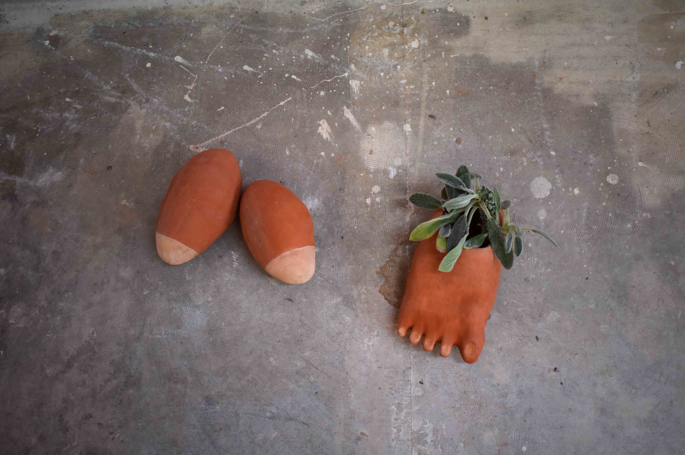

Le gros pied et les deux seins sont un trio, ils symbolisent la présence humaine féminine, l’ancrage dans la terre
par leur lourdeur, leur poid et les sons qu'ils produisent. Le pied sert de contenant, il peut accueillir des plantes sauvages, les seins peuvent être activés par le toucher, remplis de billes d'argile ils émettent des sons propres aux vides qu'ils abritent. Ce trio a été réalisé en faïence rouge, durant l'été 2019 dans l'atelier Paul Flury à Montreuil suite à une invitation d'Antoine Medes.
The fat foot and the boobs are a trio, they symbolize the female presence, a solid foothold through their heaviness,
their weight and the sounds they produce. The foot serves as a container, it can host wild plants, the boobs can be activated by touch, they are filled with clay balls and produce sounds which are specific to their empty parts.
This trio was made in red clay, in the summer of 2019 in Paul Flury's atelier in Montreuil following an invitation from
Antoine Medes.
par leur lourdeur, leur poid et les sons qu'ils produisent. Le pied sert de contenant, il peut accueillir des plantes sauvages, les seins peuvent être activés par le toucher, remplis de billes d'argile ils émettent des sons propres aux vides qu'ils abritent. Ce trio a été réalisé en faïence rouge, durant l'été 2019 dans l'atelier Paul Flury à Montreuil suite à une invitation d'Antoine Medes.
The fat foot and the boobs are a trio, they symbolize the female presence, a solid foothold through their heaviness,
their weight and the sounds they produce. The foot serves as a container, it can host wild plants, the boobs can be activated by touch, they are filled with clay balls and produce sounds which are specific to their empty parts.
This trio was made in red clay, in the summer of 2019 in Paul Flury's atelier in Montreuil following an invitation from
Antoine Medes.

© photo Camille Martin